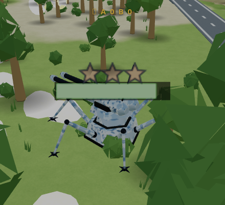
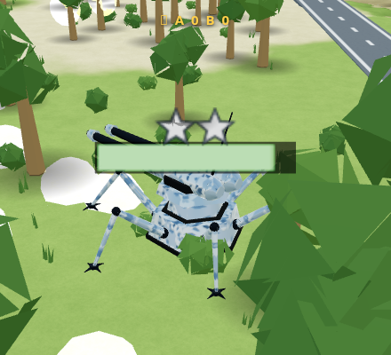
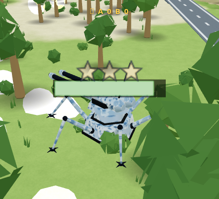

Stars over the hull — unit promotions
Every vehicle can now earn rank. Kill an enemy vehicle: a star appears over your hull. Keep the streak alive and the stars climb through three tiers — and each star makes the veteran a little more dangerous. Nine kills is three gold stars: max rank, an ace.



The ladder
| kills | rank | each star adds | at full tier |
|---|---|---|---|
| 1–3 | BRONZE ★ → ★★★ | +3% speed | +9% speed |
| 4–6 | SILVER ★ → ★★★ | +5% max hull (healed on pin-on) | +15% hull |
| 7–9 | GOLD ★ → ★★★ | +5% damage | +15% damage |
The buffs stack across tiers — a triple-gold ace runs ~9% faster, takes ~15% more punishment, and hits ~15% harder. Deliberately small numbers: an ace should be a prize-fighter, not a boss monster. The order is Jacob's design and it paces well: mobility first (survive by evasion), then durability, then lethality — the scariest gift arrives last.
Rank lives in the garage, dies on the field
Rank belongs to the individual, and RMRF's garage model gives each vehicle type a persistent identity: recall your decorated Lurcher to swap vehicles and its stars are banked — the next time that type rolls out, the rank comes back with it. But if the unit is destroyed, the stars die with it and the next one starts clean. Keeping an ace alive is its own little game — Jacob: "it's an extra challenge to see if you can keep that unit alive." The whole match economy already runs on attrition, so a veteran is a real asset with real stakes, for the AI and for you (player kills pin stars the same way).
Promotions announce themselves in the feed: GREY lurcher promoted —
SILVER ★★!
It took about an hour to matter
What's next for the stars
- AI awareness — fight-or-flight should fear a gold ace and commanders should protect their own veterans (and hesitate before a swap that risks one).
- Bounty — killing a decorated unit should pay out scrap, so an enemy ace is a prize as well as a threat. Plugs straight into the salvage economy.
- Rank in the intel line — the ?nav contact readout showing
⚠ lurcher ★★★ 34u, because that is information worth fleeing from.
Implementation: per-vehicle kill counter fed by the existing kill-credit path;
three multipliers at the speed/hull/damage choke points; vector-drawn star billboard riding
the health-bar group; per-team per-type rank banks. Debug: RR.setRank(i, kills).
v316–v319 uncommitted, awaiting playtest.